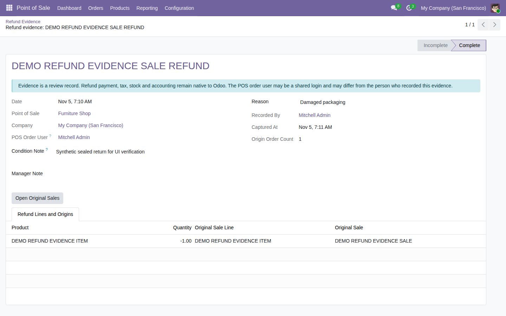

Record a controlled reason and condition for each native POS refund, with line-level links to its original sale.
Free, open-source Odoo 19 addon (LGPL-3). Requires the standard point_of_sale module.
Open Point of Sale → Orders → Refund Evidence after processing a normal Odoo POS refund.

Tested on Odoo 19 Community as a backend workflow. No cashier popup, offline capture or attachment upload is included. Multi-origin provenance is tested at model level because native POS sync rejects multi-origin refunds. Enterprise compatibility and a POS frontend browser flow remain unverified.